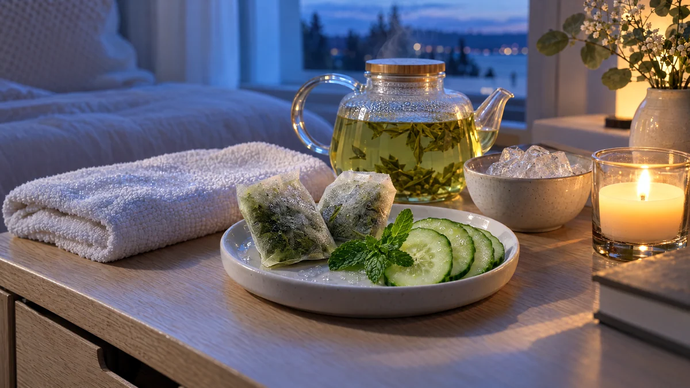

RESTFEST · HEMMASPA
Svalkande ögonkuddar av använda gröntepåsar och gurka
Två använda tepåsar med grönt te och en bit gurka. Tepåsarna kyls i frysen och läggs över ögonlocken tillsammans med tunna gurkskivor, medan du vilar under en kall, fuktig tvättlapp. Tio minuter som får trötta ögon att kännas svalare och piggare, gjorda av det som annars hamnar i soporna.
- Förberedelse
- 5 min + 20 min i frysen
- Verkningstid
- 10 min
- Räcker till
- 1 behandling
- Nivå
- Nybörjare
Bra att veta. Gör ett lapptest innan du provar något nytt: stryk lite på insidan av underarmen och vänta ett dygn.
 Det här behöver du
Det här behöver du
Tryck på + vid det du behöver köpa.
Gör så här
- Låt tepåsarna svalna efter teet. Krama ur dem lätt, så att de är fuktiga men inte droppar.
- Lägg dem på en liten tallrik och ställ in dem i frysen i 15–20 minuter, eller i kylen i en timme. De ska vara kalla, inte stenhårda.
- Skär två tunna skivor gurka, ca 3 mm.
- Tvätta ansiktet och ta bort ögonsminket.
- Luta dig tillbaka med huvudet lite högt. Lägg en tepåse över varje stängt ögonlock och gurkskivorna ovanpå, eller under ögonen.
- Blöt tvättlappen i kallt vatten, vrid ur den och lägg den över pannan. Vila i 10 minuter.
- Ta bort tepåsarna och badda huden runt ögonen med lite kallt vatten. Klappa torrt och avsluta med en mild ögonkräm om du har.
Presentation och användning
- Lägg tepåsarna och gurkskivorna på ett litet fat med en kvist mynta, och ställ det på en bricka med en kopp nybryggt te.
- Gör behandlingen på kvällen i soffan eller sängen, med släckt taklampa och ett tänt ljus.
- Passar fint som avslutning efter havremasken i behandling 33.
- Spara dagens använda tepåsar i en burk i kylen, så har du alltid ett par redo till kvällen.
Bra att veta
- Använd bara tepåsar utan tillsatt arom, glitter eller torkade blommor, och klipp inte upp påsarna.
- Låt inget te rinna in i ögonen. Får du det i ögat, skölj med ljummet vatten.
- Använd inte behandlingen vid ögoninflammation, rodnad eller om du nyligen har opererat ögonen.
- Släng tepåsarna efteråt, och använd inte påsar som legat i kylen mer än ett dygn.